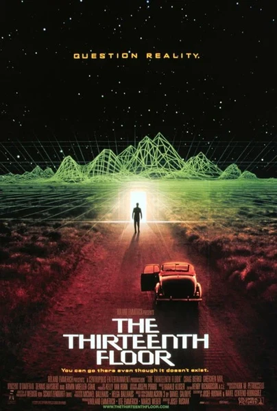

Фильм · 1999 · Триллер, Фантастика
Учёный создаёт виртуальный мир, где подозревают, что «реальность» — лишь симуляция. Философская фантастика о симулякрах и копиях сознания.
A scientist builds a virtual world where some suspect the 'real' world is itself a simulation. Philosophical sci-fi about simulacra and copies of consciousness.
← Вернуться в каталог IT Movies